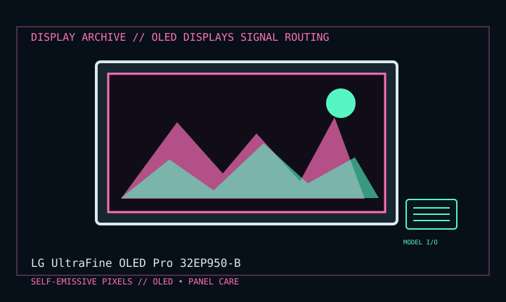

[ INDIVIDUAL COMPONENT // DISPLAY ARCHIVE ]
LG UltraFine OLED Pro 32EP950-B
31.5-inch professional RGB OLED reference display introduced in 2021.

IDENTIFICATION: Match the exact model suffix, region and installed option boards to the cited manual and rear label. Do not infer electrical compatibility from connector shape.
Model-specific specifications
| Catalog class | Oled Displays |
|---|---|
| Exact product | LG UltraFine OLED Pro 32EP950-B |
| Era / purpose | 31.5-inch professional RGB OLED reference display introduced in 2021. |
| Panel / image | 31.5-inch RGB OLED; 3840 × 2160 UHD, 16:9, 60 Hz; 10-bit color and wide-gamut modes listed by LG. |
| Inputs | USB-C with DisplayPort Alt Mode and up to 90 W USB Power Delivery; two DisplayPort 1.4 and one HDMI 2.0 input in the model specification. USB hub and headphone out are separate functions. |
| Power / mechanical | External adapter; typical power about 65 W, maximum 210 W; height/tilt/pivot stand and 100 × 100 mm VESA. |
| Color / calibration | Hardware-calibration capable; model manual and LG software determine supported calibration workflow. |
Revision, timing & host compatibility
Identify suffix 32EP950-B and region. For 4K60, match interface, cable and source color format; USB-C requires DP Alt Mode and power negotiation. Do not confuse EP950 with later EP9-series revisions or LCD UltraFine displays. OLED static image retention and wear are panel-use concerns, not covered by LCD care assumptions.
Before operation, compare source signal type, scan/frame timing, pinout, interface bandwidth, input-board configuration and mains/DC rating against the model-specific manual and nameplate. A listed maximum mode is not a promise of optimum image quality.
Vintage preservation & repair notes
Log panel hours, brightness, calibration profile and static content exposure. Use LG panel-care/pixel-cleaning guidance; avoid leaving fixed logos or desktop UI at high luminance. Preserve external adapter, stand and hood/accessories; panel replacement/calibration is specialist service.
Record serial/date code, configuration, all installed interface boards, accessories, image condition, calibration state, test source and document edition. Disconnect power before external cleaning and use only the manufacturer-approved procedure; do not open CRT/LCD/OLED equipment without qualified service practice.
Manufacturer manuals & specifications
- LG 32EP950-B Support & ManualsManufacturer manual and regional product downloads.
- LG 32EP950-B Product SpecificationsLG product page for panel, inputs, stand and power specifications.